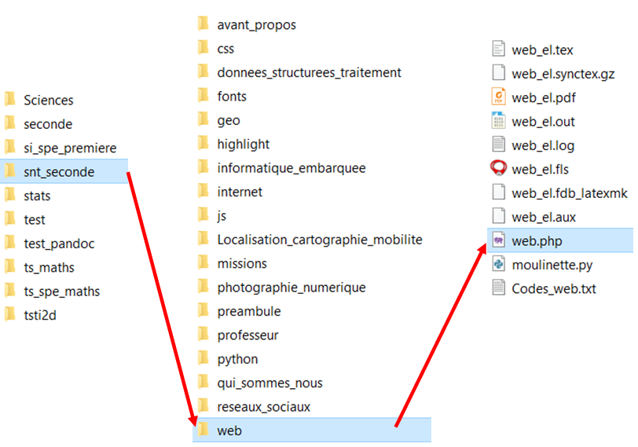
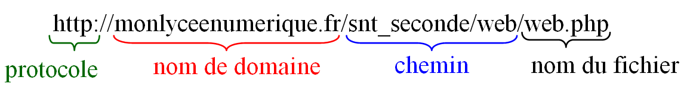
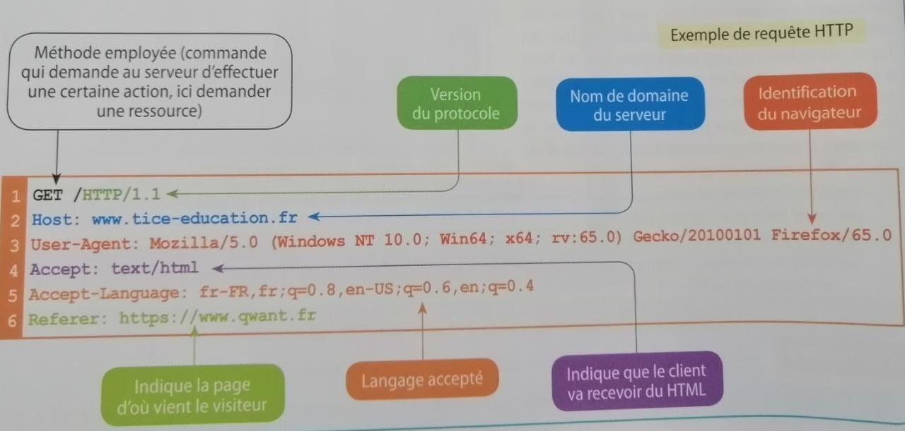

2.Fonctionnement du web
3. Fonctionnement du web
3.1.Notion d'URL
Définition 1:
La composition d'une URL
Les sites Web ont une structure en arborescence comme vos répertoires et fichiers sur votre ordinateur. Une ressource (page, photo, vidéo, …) peut se trouver dans un dossier, lui-même situé dans un autre dossier et ainsi de suite.

Une URL (Uniform Resource Locator) est l’adresse d’une ressource d’un site Web : elle indique où elle se trouve dans l’arborescence du site. Elle se compose de 4 grandes parties : le protocole HTTP (ou HTTPS), le nom de domaine, le chemin vers la ressource et le nom du fichier.

Exercice 2.
Distinguer les quatre parties (protocole, nom de domaine, chemin et fichier) de l’URL suivante : http://eduscol.education.fr/actualites/article/sciences-numerique-technologie.html
3.2.Protocole HTTP
Les requêtes HTTP
Le Web s’appuie sur un dialogue entre clients et serveurs.
Les clients sont les applications qui se connectent au Web, comme les navigateurs, qui envoient des requêtes HTTP (HyperText Transfert Protocol) aux serveurs, ordinateurs où sont stockées les données consultées.
HTTP est un protocolequi permet aux ordinateurs de communiquer entre eux.

L'interaction client-serveur
Lorsque l’on effectue une requête HTTP sur notre navigateur, le serveur Web lui renvoie du code que le navigateur interprète et met en forme de manière lisible.
Les clients peuvent recevoir des codes exécutables, comme le Java-Script, qui permettent de rendre les pages plus dynamiques.
Ce que nous pouvons voir sur ce cours est le résultat d’une interaction constante entre le serveur et le client
Définition:
Le protocole HTTP permet de transférer des fichiers mais ne se préoccupent pas du chemin suivi, ce qui rend les informations sensibles, privées ou financières, vulnérables à une interception et à un détournement.
Pour pallier à ce problème, le protocole de sécurité SSL (Secure Socket Layer) va s'ajouter au protocole HTTP et crypter les informations entre le serveur et le client. HTTP devient alors HTTPS . Un cadenas apparaît dans la barre d'adresse du navigateur pour indiquer que la communication est sécurisée.
Remarque:
Attention, HTTPS ne garantit en rien que le site soit un site sûr, seule la communication est sécurisée !
Ainsi, avec le protocole HTTP, un pirate informatique peut intercepter des informations transitant entre le client et le serveur et les lire tandis qu'avec le protocole HTTPS, il peut les intercepter mais ne peut plus les lire puisque les données sont cryptées.
Bilan:
Le protocole de transfert hypertexte HTTP (HyperTexte Transfer Protocol) est une méthode de communication entre un client (machine qui navigue sur le web) et un serveur informatique (machine hébergeant des ressources Web) pour échanger des informations.
Voici le fonctionnement d'un échange entre un client et un serveur :
Le client émet des requêtes HTTP : un code informatique donnant des informations sur le client et des consignes d'exécutions au serveur.
Le serveur renvoie une réponse HTTP : la ressource sous forme de code.
Le navigateur du client met en forme la réponse pour l'afficher.
Le protocole HTTPS garantit le fait que si quelqu'un intercepte une information transmise entre le client et le serveur, il ne pourra pas l'utiliser car l'information est cryptée. Par contre, ce protocole HTTPS ne garantit pas la fiabilité du site visité.
🧠 Teste tes connaissances
Réponds aux questions puis clique sur « Vérifier » — la correction s'affiche aussitôt.
1. De combien de grandes parties se compose une URL selon le cours ?
2. Que signifie le sigle HTTP ?
3. Quel protocole s'ajoute à HTTP pour crypter les informations entre le serveur et le client ?
4. Que garantit le protocole HTTPS d'après la remarque du cours ?
5. Dans un échange client-serveur, qui met en forme la réponse pour l'afficher ?